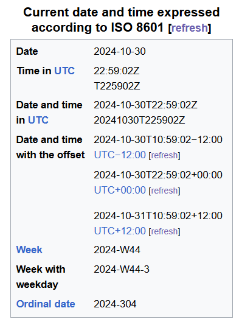

:
Prerequisites
:
-
Time Zone: A time zone is an area which observes a
uniform
standard time : for
legal, commercial and social purposes.
-
GMT (Greenwich Mean Time ) : GMT বা Greenwich Mean
Time হলো সময়ের একটি মানদণ্ড, যা মূলত ইংল্যান্ডের গ্রিনউইচ অঞ্চলের সময়ের
ওপর ভিত্তি করে নির্ধারণ করা হয়। GMT বর্তমানে UTC দ্বারা প্রতিস্থাপিত
হলেও অনেক সময় GMT এখনও ব্যবহার করা হয়, বিশেষ করে ঐতিহাসিক ও সাধারণ
পারিভাষিক ক্ষেত্রে।
-
UTC (Coordinated Universal Time): UTC হলো
বিশ্বব্যাপী
সময়ের মানদণ্ড, যা
বিভিন্ন টাইম জোনের জন্য
রেফারেন্স হিসেবে ব্যবহৃত হয়। এটি GMT-এর মতোই একটি
মানদণ্ড, কিন্তু এর সাথে কিছু পরিমার্জন করা হয়, যাতে এটি পৃথিবীর ঘূর্ণন
অনুযায়ী সামঞ্জস্য থাকে। JavaScript-এ Date অবজেক্ট দ্বারা সময় নিলে সেটি
সাধারণত UTC থেকে পরিমাপ করা হয়।
-
ISO (International Standardization for Organization):
ISO 8601 হলো একটি আন্তর্জাতিক স্ট্যান্ডার্ড, যা তারিখ এবং সময়কে একটি
নির্দিষ্ট ফরম্যাটে প্রকাশ করে। JavaScript-এ ISO ফরম্যাট ব্যবহার করে সময়
সেট বা প্রদর্শন করা যায়। সাধারণত ISO 8601 ফরম্যাট হয় এমন:
YYYY-MM-DDTHH:MM:SSZ (যেমন: 2024-10-29T10:30:00Z, যেখানে Z UTC নির্দেশ
করে)। এই ফরম্যাটটি প্রায় সব ব্রাউজার এবং API-তে স্বীকৃত।
-
Unix Timestamp:Unix Timestamp বা Epoch Time হলো ১৯৭০
সালের ১ জানুয়ারি ০০:০০:০০ UTC সময় থেকে শুরু করে যত সেকেন্ড অতিবাহিত
হয়েছে, তার গণনা। এই টিমস্ট্যাম্প একটি সংখ্যা হিসেবে প্রকাশিত হয় এবং
সাধারণত এটি ব্যবহার করা হয় সময়ের মধ্যে গণনার জন্য। JavaScript-এ
Date.now() ব্যবহার করে বর্তমান Unix Timestamp পাওয়া যায়।
ঠিক বলেছেন। `new Date()` কন্সট্রাক্টর যখন কোনো আর্গুমেন্ট ছাড়া ডাকা হয়, তখন এটি **বর্তমান UTC তারিখ এবং সময়** দেয়। পরে এটি ব্যবহারকারীর **সিস্টেমের লোকাল টাইমজোন** অনুযায়ী সময় তৈরি করে।
JavaScript এর Date কন্সট্রাক্টর তিন ভাবে কাজ করতে পারে:
1. **Empty Argument**: যদি `new Date()` আর্গুমেন্ট ছাড়া ডাকা হয়, তাহলে এটি বর্তমান UTC টাইম দিয়ে ডেট অবজেক্ট তৈরি করে পরে **সিস্টেমের লোকাল টাইমজোন** অনুযায়ী সময় তৈরি করে
```javascript
const currentDate = new Date();
console.log(currentDate); // বর্তমান তারিখ এবং সময়
```
2. **Timestamp (Milliseconds)**: যদি সংখ্যাসূচক মান হিসেবে আর্গুমেন্ট পাস করা হয়, তাহলে এটি **1970-01-01 থেকে শুরু করে** ঐ নির্দিষ্ট সময়ের মিলিসেকেন্ড অনুযায়ী একটি UTC time based ডেট অবজেক্ট তৈরি করে।
```javascript
const dateFromMilliseconds = new Date(1609459200000);
console.log(dateFromMilliseconds); // নির্দিষ্ট তারিখ এবং সময়
```
3. **Date String বা Date Parameters**: নির্দিষ্ট স্ট্রিং বা আলাদা প্যারামিটার হিসেবে সময় পাস করলেও এটি সেই অনুসারে একটি ডেট অবজেক্ট তৈরি করবে।
```javascript
const specificDate = new Date('2024-10-30T08:38:13Z'); // ISO format
console.log(specificDate);
```
কাজেই, `new Date()`-এ আর্গুমেন্ট না দিলে JavaScript স্বয়ংক্রিয়ভাবে UTC time ধরে নেয় পরে **সিস্টেমের লোকাল টাইমজোন** অনুযায়ী বর্তমান সময়ের ডেট অবজেক্ট তৈরি করে।
the new keyword is only uses for function invoking if
we are don't call the function with new keyword the prettier will do its
invoked
ISO Date Format in Detail

YYYY-MM-DDTHH:mm:ss.mssZ
-
YYYY: represents the year with four digits (e.g.,
2022).
-
MM: represents the month with two digits (e.g., 01
for January).
-
DD: represents the day with two digits (e.g., 01
for the 1st day of the month).
-
T: represents the starting of time after it.
-
HH: represents hours with two digits (24-hour
format).
-
mm: represents minutes with two digits.
-
ss: represents seconds with two digits.
-
sss: represents milliseconds with three digits.
-
Z: represents the time zone offset in the form of ±HH:mm (e.g.,
+05:30 for UTC+5:30) also we can write only Z, it means UTC time.
Here are some examples,
-
2024-03-06T18:23:06.682Z (Z indicates that the time is expressed in
UTC)
-
2024-03-06T18:23:06.682+05:30 ("+05:30" indicates that this time zone
is 5 hours and 30 minutes ahead of UTC)
-
2024-03-06T18:23:06.682-07:00 ("-07:00" indicates that this time zone
is 7 hours and 0 minutes behind UTC)